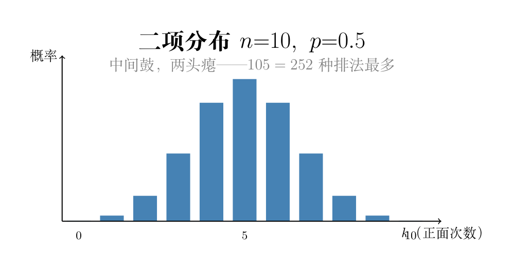

画面： 你在微信上给朋友发了一条消息。根据经验，70% 的概率他秒回，20% 的概率半小时后回，10% 的概率忘了回。你不知道这次会怎样，但你知道每种可能性的比例。这就是随机变量：一个取值不确定但分布规律确定的量。
数学里写：$X = \text{"回复所需时间"}$。$X$ 可以取「秒回」「半小时」「不回」三个值。
画面： 桌上有三个盒子，标着「秒回」「半小时」「不回」。你有 10 个筹码要往里放——秒回盒放 7 个，半小时盒放 2 个，不回盒放 1 个。总共 10 个筹码。
现在从这三个盒子里按筹码比例随机抽一个——抽到秒回的概率 = 7/10 = 70%，半小时 = 20%，不回 = 10%。
PMF（概率质量函数）就是给每个可能的取值分配一个"筹码重量"。所有筹码加起来 = 1。
$$P(X = x_i) = p_i, \quad \sum_i p_i = 1$$
这个条件不是外加的约束，而是概率本身的底层逻辑。做一次实验，结果必然是所有可能取值中的某一个——不可能逃出这个集合。把所有结果的概率加起来，就是「一定会有某个结果发生」这件事的概率，也就是 1 = 100%。
反过来想：如果 $\sum p_i < 1$，说明还有「概率凭空消失了」——这违背了概率的完备性；如果 $\sum p_i > 1$，说明两个不同结果在概率上「重叠了」——这违背了互斥性。所以 $\sum p_i = 1$ 既是定义，也是检验一个人造分布是否合法的标准。
只有两种结果：成功（1）和失败（0）。
$$P(X=1) = p, \quad P(X=0) = 1-p$$
画面： 一枚偏心的硬币，正面概率 $p=0.7$。抛一次，不是正面就是反面——就这么简单。
# 00-14 伯努利分布：模拟抛偏心硬币1000次
# 导入numpy，别名np
import numpy as np
# seed()：固定随机种子，保证每次运行结果一样
np.random.seed(42)
# 正面概率 p=0.7（偏心硬币正面更重）
p = 0.7
# np.random.random(1000) → 生成1000个[0,1)均匀分布的随机小数
# < p → 小于0.7的变成True（正面），≥0.7的变成False（反面）
# 结果：布尔数组，True=正面(约70%)
flips = np.random.random(1000) < p
# .mean() 对布尔数组：True当作1、False当作0 → 平均值=正面比例
# :.3f = 保留3位小数
print(f"p=0.7, 抛1000次: 正面比例 {flips.mean():.3f}")
推导二项分布公式，分两步走：
第一步：考虑一个特定排列的概率。
假设 n=5 次抛硬币，我们关心恰好 k=2 次正面的情况。一个具体的排列是：正、正、反、反、反（前两次正面，后三次反面）。
每次抛硬币是独立的，所以这个特定排列发生的概率 = 各次结果的概率直接相乘：
$$P(\text{正正反反反}) = p \cdot p \cdot (1-p) \cdot (1-p) \cdot (1-p) = p^2 (1-p)^{5-2}$$
推广到一般情况：n 次中恰好 k 次正面、n-k 次反面的任意一个特定排列，其概率都是：
$$\boxed{p^k (1-p)^{n-k}}$$
第二步：有多少种这样的排列？
「恰好 k 次正面」不要求正面出现在哪几次——n 次试验中，随便选哪 k 个位置放正面，剩下的自然就是反面。从 n 个位置里选 k 个，就是一个组合数问题：
$$\binom{n}{k} = \frac{n!}{k!(n-k)!}$$
每种排列的概率都是 $p^k (1-p)^{n-k}$，而且这些排列是互斥的（一次实验只能出现其中一个排列），所以总概率 = 排列数 × 每个排列的概率：
$$\boxed{P(X=k) = \binom{n}{k} p^k (1-p)^{n-k}}$$
$p^k (1-p)^{n-k}$ 这个因子在 k 取中间值时并不一定最大（取决于 p）。真正让中间鼓起来的是 $\binom{n}{k}$：
| k | 0 | 1 | 2 | 3 | 4 | 5 |
|---|---|---|---|---|---|---|
| C(5,k) | 1 | 5 | 10 | 10 | 5 | 1 |
「正正反反反」只有 1 种排法；「2 正 3 反」却有 $\binom{5}{2}=10$ 种。排列方式越多，这件事就越容易发生。

# 00-14 二项分布：模拟抛10次硬币，重复10000轮
# n=每轮抛10次，p=公平硬币(正面概率0.5)
n, p = 10, 0.5
# np.random.binomial(n, p, size)：模拟 size 轮，每轮抛 n 次
# 返回 size 个整数，每个 = 该轮正面出现的次数(0~n)
# 10000轮的正面次数数组
results = np.random.binomial(n, p, size=10000)
# 检验k=3,5,7这三个正面次数的概率
for k in [3, 5, 7]:
# results==k → 布尔数组，mean() → 频率≈概率
freq = np.mean(results == k)
# :.4f = 保留4位小数
print(f"P(X={k}) ≈ {freq:.4f}")
# P(X=5) 最大 ← C(10,5)=252种排法最多（中间鼓）
# P(X=3) ≈ P(X=7) ← 对称分布（p=0.5公平硬币）
<